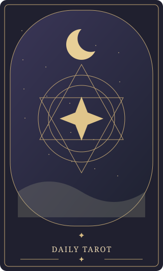
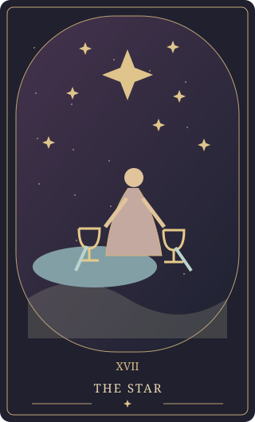

✧ A LITTLE RITUAL, EVERY DAY
聆听今日的
宇宙低语。
Discover the message the universe
has for you today.
放下片刻喧嚣，留一点时间给自己。
一张塔罗，一次与内心温柔的相遇。
22 张大阿尔卡那 · 不限次数 · 与朋友一起探索
✦✧☾


AS ABOVE, SO BELOW01 / 静心 · 抽牌 · 感受让直觉引路，让思绪沉淀 ✧
Discover the message the universe
has for you today.
放下片刻喧嚣，留一点时间给自己。
一张塔罗，一次与内心温柔的相遇。
22 张大阿尔卡那 · 不限次数 · 与朋友一起探索


AS ABOVE, SO BELOW